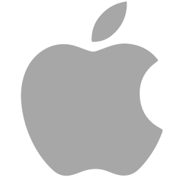
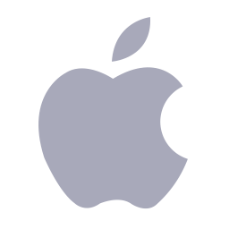
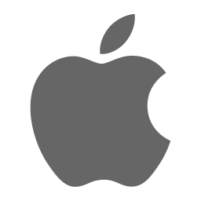

Created with the future
RoadMap
-

2021
- 국비 07월 08일 수료
목표:창의적인웹사이트 만들기,취업
- 07/08일 드디어 마지막수업이 끝나며, 간단한 담소를 나누며 다같이 기뻐했다 그리구
취업상담선생님을만나 상담을받고 회사에 이력서를 붙여 스타트업회사에 입사에 성공을했다.
그리고 512GB맥북을사면서 나는 정말정말 기뻐했다.
-

2022
- 신입개발자
목표:주말 스터디공부
- 신입개발자 모르는영역부분이 많아 지속적인 유대관계 갖으며,
주말에는 스터디를하면서 주말에는 같이공부를하며, 좋은트렌드를 갖기위해
끊임없는 공부와 좋은사이트를 만들기위해 지속적인 코드를짜면서 주말에는
취미생활로 운동을 다시시작하기 시작했다.
-
2023
- 1년차 신입개발자
취미:독서,카페에가서 코딩
- 1년차신입개발자. 내가모르는분야들은 블로그를 사용하면서 여러분야에서 공부하며 취미생활도 즐기면서
힘든과정에서 2021년 6걔월이라는시간을생각을하며 한번더 할수있다는 마인드를 갖으며 포기하지않고 한걸음
한걸음 오늘도 걸어나가며 웃고있는모습이보인다
-

2026
- Junior developer
목표:UI&UX Developer
- 5년차에 들어서서 주니어개발자에서 시니어개발자를 올라가기위한단계 이다.
내 감정은 말로표현을할수없었고, 솔직히 포기하고싶을때도 많았고, 많이 부딪혀보면서
블로그를운영하면서 아쉬운점도 많고 지칠때도 많지만 초심을 잃지않고 오늘도 내일도 올라가는모습이보인다
-
2030
- Senior Developer
목표:UI & UX Team Leader
- UI및UX 팀장으로 임명되었고,30대초반이 되었고 20대를 회상을하면서 과거를칭찬하면서
지금의 나태함을 반성하게되었고 더욱더 꾸준히 나의모습은 셔츠와 슬랙스와 로퍼를 즐겨입으며,
깔끔한스타일좋아하는 깔끔한30대청년으로 거듭나고있었고,여전히 나는 Daily commit 운동을 즐겨하구있다
-
2035
- 새로운 도전
목표:일관되게 관리하고 열심히살자
- 40대에 다가오면서 끊임없는관리와운동을하며 건강한 몸을유지하며 피부미용도 여전히 꾸준히하며 깔끔한아빠의모습을보여주며
20~30대 도전정신을 아직도 갖고있으면서 끊임없는공부와 신문을보면서 다양한 자격증들과 다양한트렌드 만들기위해 많은노력을하고있다
그리고 40대의 청춘을 도전을하면서 주말애는 다양한 취미생활을해보고싶다
-
2040
- 젊음을 유지하는트렌드
목표:후회하지않는 삶
- 내인생은 정말후회하지않고 끊임없이 달려온것같다.
또 지칠수있고 포기할수도있다 하지만 나역시 나는 정말 포기하지않고 또 달려가보고싶다. 20대의 젊음이라는패기를 다시한번더
포기하지않고 달려가보고싶다. 오늘도 내일도 꾸준히트렌드를 따라가기위해 노력하구있다.